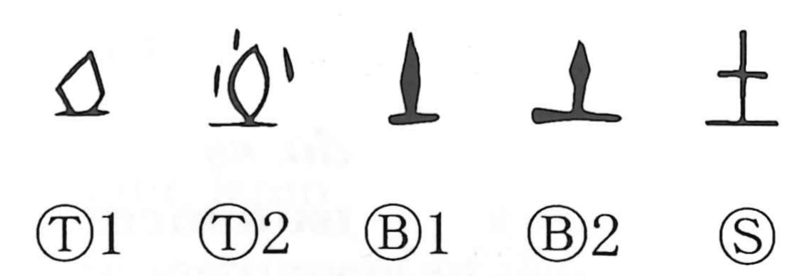

土

Kun: tsuchi | On: do, to
earth ・ soil ・ ground
Explanation
土 pictures a rounded mass of earth set upright on a stand. The earth was shaped into a tall mound and worshipped as the deity of the land. Some oracle-bone forms show a libation being poured over this earthen sacred object.
土 was thus originally the graph for the earth deity and the place where it was worshipped. It is the earlier form of 社; 示 was added later to make that sacred use explicit. The community’s land belonged under the deity’s protection.
From the consecrated earth and its territory, 土 broadened to the land itself, cultivated ground, soil, and a clod of earth. The modern everyday meaning preserves the material from which the original sacred object was made.